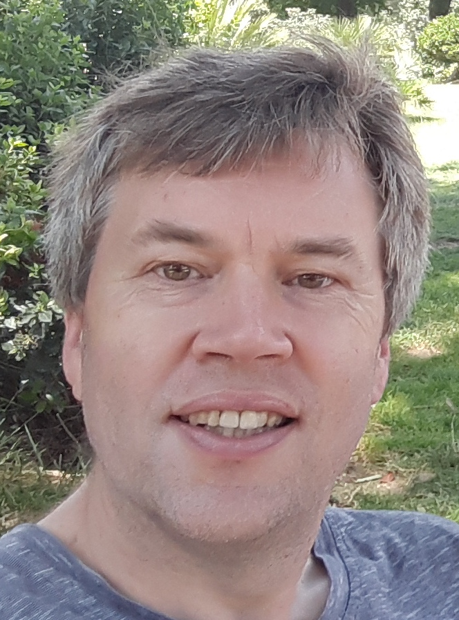

| Persoonsgegevens |  | |
|---|---|---|
| Naam: | Edwin Spee | |
| Formeel: | dr E.J. Spee | |
| E-mail: | edwin.spee@epsig.nl | |
| Adres: | Van der Kloot Meyburgstraat 5 3067 EP Rotterdam | |
| Telefoon: | mobiel: 06 - 29 45 97 32; werk: 088 - 335 88 29 | |
| Geboortedatum en plaats: | 18 mei 1969 te Gramsbergen | |
| Nationaliteit: | Nederlandse | |
| Geslacht, burgelijke staat: | man, vader van twee dochters | |
| Opleiding | ||
| aug 1981 - jun 1987 | VWO-opleiding aan de Christelijke Scholengemeenschap Jan Arentsz te Alkmaar, afgesloten met een diploma. | |
| sep 1987 - aug 1992 | Experimentele Natuurkunde met Aantekening Natuurkundige Informatica aan de Vrije Universiteit te Amsterdam, afgesloten met een doctoraalbul. | |
| 23 jan 1998 | Gepromoveerd aan de Universiteit van Amsterdam, Faculteit Wiskunde, Informatica, Natuurkunde en Sterrenkunde, op het proefschrift getiteld "Numerical Methods in Global Transport-Chemistry Models". | |
| Werkervaring | ||
| okt 1992 - dec 1993 | Dienstplichtig Marine officier, geplaatst bij de sectie Research and Development, met als taak het volgen van onderzoek bij TNO en het verrichten van diverse literatuurstudies. | |
| jan 1994 - dec 1997 | OIO op het CWI aan het CIRK-project, met als taak de ontwikkeling van numerieke methodes voor globale luchtverontreinigingsmodellen. Belangrijkste aspecten zijn passieve advectie op een bol en stijve differentiaalvergelijkingen afkomstig van atmosferische chemie. De nadruk ligt op methoden die een hoge efficientie halen op vectorprocessoren, zoals de Cray C90. | |
| jan 1998 - mar 1999 | Software engineer bij CMG. | |
| apr 1999 - jun 2000 | Projectmedewerker bij het IMAU (Universiteit van Utrecht), op het gebied van de oceaanmodellering. | |
| jul 2000 - dec 2007 |
(Deel-)Projectleider Wiskundige modellen aan het
Rijksinstituut voor Kust en Zee (RIKZ)
Verantwoordelijk voor de ontwikkeling van Domeindecompositie voor WAQUA en TRIWAQ, en de opname hiervan in de standaard versie bij Simona Beheer en Onderhoud. mei 2006 - apr 2008: lid OR-RIKZ, (t)OR-Waterdienst, platform OR-Deltares/Delta-Instituut | |
| jan 2008 - heden | Senior adviseur/onderzoeker bij de softwareafdeling van Deltares. | |
| Bestuurlijke (neven) activiteiten | ||
| 1987 - heden | Bestuurlijke en organisatorische functies in de kerk van Bergen en Rotterdam | |
| 1990 - 1991 | Secretaris AIK (Natuurkunde studenten vereniging) | |
| 1990 - aug 1996 | Lid van de Milieugroep Bergen | |
| mei 1995 - mei 1997 | Penningmeester bij de Schaatstrainingsgroep Bergen | |
| 2001 - feb 2003 | Redactielid (vanaf medio 2002 hoofdredacteur) Tegenstroom (afdelingsblad D66-Rotterdam) | |
| maart 2002 | verkiesbaar namens D66 voor de Rotterdamse deelraad Prins Alexander. | |
| sep 2005 - mrt 2006 | lijsttrekker namens D66 voor de Rotterdamse deelraad Prins Alexander. | |
| 2010 | commissie verkiezingsprogramma namens D66-Prins Alexander | |
| 2010 - 2011 | burgerlid in de commissie programmabegroting | |
| sep 2011 - heden | deelraadslid voor D66 in Rotterdam, Prins Alexander. Lid van commissies Welzijn en Algemene Zaken, Jaarrekening. | |
| Cursussen | ||
| 1994 | Presentatie-cursus | |
| 1995 | J.M. Burgerscentrum: Numerieke Stromingsleer | |
| 1998 | CSTA (Commander Structured Technische Analyse) | |
| 1998 | OO-B, OO-A (Object Oriëntatie, basis en analyse) | |
| 2000 | Waqua, Triwaq | |
| 2002 | ROI: communicatie en gespreksvoering | |
| 2002 | Parallel Rekenen en Domeindecompositie | |